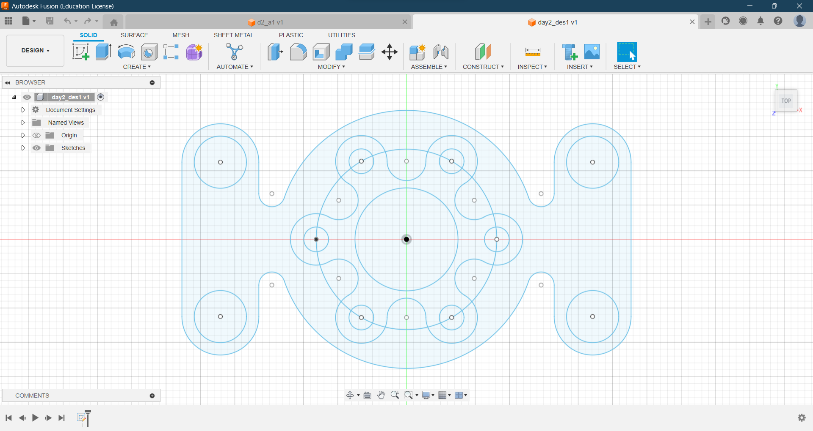

Assignment Info
- Title: 3D Design
- Module no.: 01
- Start date:08 April 2024
- Assignment date:14 April 2024
Exploring the World of 3D Design with Fusion 360
Getting Started:
My journey into the fascinating world of 3D design began with an introduction to Autodesk's Fusion 360 software. This powerful tool, renowned for its versatility and user-friendly interface, opened up a realm of possibilities for creating intricate 3D models. After creating an account on Fusion 360, I accessed the software using my college's ID card, granting me access to an educational license.
As I delved deeper into Fusion 360, I was captivated by its capabilities, from creating simple geometric shapes to designing complex mechanical parts. The software's intuitive design and extensive feature set allowed me to unleash my creativity and bring my ideas to life in the digital realm.
One of the most exciting aspects of learning Fusion 360 was the ability to visualize and iterate on my designs in real-time. The software's parametric modeling capabilities enabled me to make precise adjustments to my models, ensuring they met the desired specifications.
The model I created at the first day of learning, using fusion 360:
{kind=link}
Overall, my first day of learning 3D design with Fusion 360 was a thrilling experience, laying the foundation for a journey filled with creativity, innovation, and endless possibilities.
Learning to Extrude (2d to 3d)
On the second day of my journey into 3D design, I delved into the world of 2D design with Fusion 360. This involved learning how to create intricate 2D sketches using the software's powerful sketching tools. These tools allowed me to draw precise lines, arcs, and circles, laying the foundation for creating complex 3D models.
After mastering 2D sketching, I learned how to extrude these 2D faces to create 3D objects. This process involved selecting a 2D face and extruding it along a specified path, transforming it into a 3D object. This capability opened up a whole new dimension of possibilities, enabling me to create three-dimensional objects from simple 2D sketches.
With the basics of 2D and 3D design under my belt, I eagerly explored Fusion 360's capabilities further, completing assigned tasks and challenges. These assignments pushed me to think creatively and apply my newfound skills to real-world design scenarios, further honing my skills and expanding my understanding of Fusion 360.
Overall, the second day of learning Fusion 360 was a fulfilling experience, as I gained a deeper understanding of 2D and 3D design principles and their application in creating digital models. I look forward to continuing my journey and exploring more advanced concepts in the days to come.
Exploring and Getting better in 3d
On the third day of my Fusion 360 journey, I immersed myself in the intricacies of 3D modeling, delving into the advanced features of the software. I honed my skills in extruding and learned to manipulate 3D objects with precision and finesse. With each exploration, I gained a deeper understanding of the tools and techniques at my disposal, and I felt myself improving with every minute of practice.
I explored various methods of extrusion, including extruding along paths and creating complex shapes by extruding multiple faces simultaneously. These techniques allowed me to create intricate and detailed 3D models, pushing the boundaries of my creativity and technical skills.
As I delved deeper into 3D modeling, I was on the verge of working on complex 3D models that would challenge my newfound skills and expand my capabilities. I felt a sense of excitement and accomplishment as I realized how far I had come in just a few days of learning.
Overall, the third day of learning Fusion 360 was a transformative experience, as I mastered the art of 3D modeling and prepared to tackle more complex projects in the future. I look forward to applying my newfound skills to create innovative and visually stunning designs that push the boundaries of what is possible with Fusion 360.
Complex 3d Designs
From day four until the submission deadline, I dedicated myself to working on three complex designs using Fusion 360. The first design was a bench vise, a mechanical device used to hold workpieces securely in place during machining or assembly. This project challenged me to apply my knowledge of extrusion and 3D modeling to create a functional and realistic representation of a bench vise.


Next, I tackled the crankshaft assembly, a critical component in engines that converts linear motion into rotational motion. This project pushed me to explore advanced features of Fusion 360, such as assemblies and joints, to simulate the complex movements of a crankshaft assembly accurately.
Finally, I worked on the Wobbling Disk Mechanism, a mechanism that demonstrates the principles of rotational motion. This project required me to think creatively and innovatively to design a mechanism that accurately represented the wobbling motion of a disk.
Despite the challenges, I successfully completed all three designs within the given time frame. This experience not only honed my skills in 3D modeling and design but also taught me valuable lessons in problem-solving and perseverance. Overall, it was a rewarding experience that showcased my growth and proficiency in using Fusion 360 for complex design projects.
Summary of the Module
Over the past four days, my journey into the world of design and 3D modeling with Fusion 360 has been nothing short of exhilarating. It all began with learning the basics of 3D design, where I explored Autodesk's Fusion 360 software and created my account using my college's ID card for an educational license. This laid the foundation for my exploration into 2D design, where I mastered the art of sketching and extrusion to create 3D objects.
As my skills progressed, I delved into more advanced concepts, such as complex 3D modeling and design. I successfully completed three challenging projects: a bench vise, a crankshaft assembly, and a Wobbling Disk Mechanism. These projects tested my creativity and technical skills, pushing me to think innovatively and problem-solve effectively.
Throughout this journey, I honed my skills in using Fusion 360's various tools and features, such as extrusion, assemblies, and joints. I also learned valuable lessons in time management and perseverance, as I worked diligently to complete each project within the given time frame.
Overall, these past four days have been a transformative experience, as I not only expanded my knowledge and skills in design and 3D modeling but also gained a deeper appreciation for the creative process. I look forward to continuing my journey and exploring new horizons in the world of design.